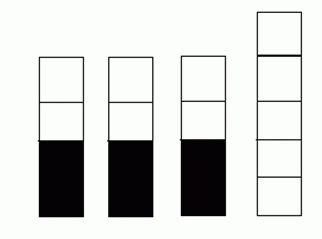

黑白游戏是一个双人游戏，黑方和白方轮流操作。一开始有四座塔，每座塔由一列若干个黑色或白色的砖块搭成（可能为空）。轮到一方操作时，该方可以选择某座塔中的某个与其颜色对应的砖块，将该砖块及其上面的砖块全部移去。若某方无法操作，则该方输掉游戏。
对于一个状态，若白方无论先手还是后手均必胜则称其为W状态。比如如图四座塔，考虑白方先手，黑方前两步必定操作两个不同的塔的第2个黑色砖块，假设是第一座与第二座，则白方只需操作第三座塔的两个白色砖块，然后剩下5个白色砖块与4个黑色砖块，双方轮流取，显然白方必胜。若白方后手同理易知其必胜。故该状态是一个W状态。

Your Task
给定三座塔与另外三座塔，请判断是否对于任意的一座塔C，若状态是W状态则状态也是W状态。